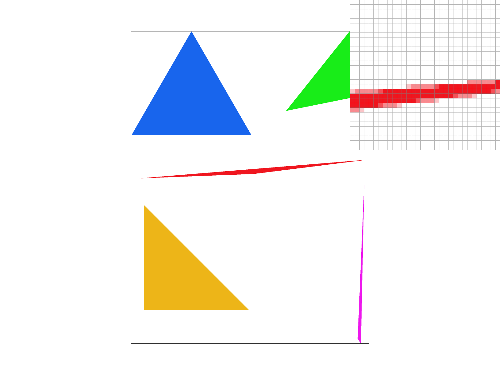
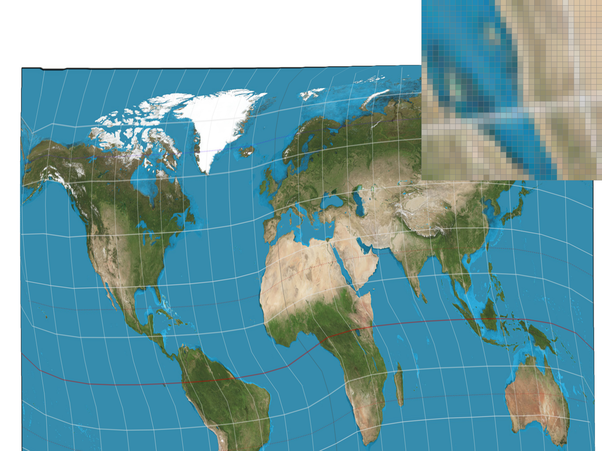
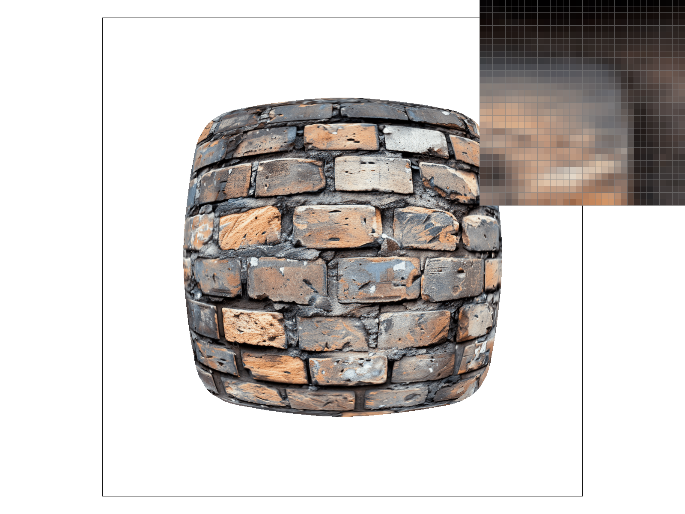

CS184/284A Spring 2026 Homework 1 Write-Up
Link to webpage: https://cal-cs184-student.github.io/hw-webpages-kaankont/hw1/index.html
Link to GitHub repository: https://github.com/cal-cs184-student/hw-webpages-kaankont
Overview
In this project we built a simple rasterizer that can render simplified SVG files. We implemented triangle rasterization with edge-function tests (Task 1), antialiased it via supersampling (Task 2), added hierarchical 2D transforms (Task 3), interpolated per-vertex colors using barycentric coordinates (Task 4), and implemented texture mapping with nearest and bilinear pixel sampling (Task 5) plus mipmap-based level sampling (Task 6). The most interesting takeaway was seeing how the same core rasterization loop (bounding box, edge tests, per-subsample writes) extends naturally to support increasingly sophisticated shading: flat color, interpolated color, and finally texture lookups with multi-level filtering.
Task 1: Drawing Single-Color Triangles
Algorithm
To rasterize a triangle, we use the three-line test. For each pixel in the bounding box of the triangle, we sample at the pixel center \((x + 0.5,\; y + 0.5)\) and evaluate three edge functions, one for each edge of the triangle. Each edge function computes the cross product of the edge direction vector and the vector from the edge's start vertex to the sample point. If all three edge function results share the same sign (all ≥ 0 or all ≤ 0), the point is inside the triangle. This dual check handles both clockwise and counter-clockwise winding orders. Samples exactly on the boundary are included.
Efficiency
The algorithm is no worse than one that checks each sample within the bounding box of the triangle. We compute the axis-aligned bounding box using the floor of the min/max of the three vertex coordinates, clamp it to the screen bounds, and only iterate over pixels within that box. No pixels outside the bounding box are ever tested.
Screenshot
basic/test4.svg with default viewing parameters and the pixel inspector centered on an interesting part of the scene.Task 2: Antialiasing by Supersampling
Algorithm and Data Structures
Supersampling works by taking multiple samples per pixel and averaging them. The sample_buffer is resized to width × height × sample_rate entries. For a pixel at position \((x, y)\), its subsamples are stored at indices (y * width + x) * sample_rate + s where s ranges from 0 to sample_rate - 1.
Within each pixel, we lay out a \(\sqrt{\text{sample_rate}} \times \sqrt{\text{sample_rate}}\) grid of subsamples. For subsample \((si, sj)\), the sample position is:
- \(sx = x + (si + 0.5) \;/\; \sqrt{\text{sample_rate}}\)
- \(sy = y + (sj + 0.5) \;/\; \sqrt{\text{sample_rate}}\)
Each subsample independently undergoes the point-in-triangle test and is written directly to sample_buffer.
Why Supersampling Reduces Aliasing
Aliasing occurs when we undersample high-frequency signals, like the sharp binary edge of a triangle. By taking multiple samples per pixel and averaging, we effectively apply a low-pass box filter. Pixels partially covered by a triangle edge get intermediate color values rather than a hard 0 or 1, producing smooth gradations at boundaries instead of jagged staircases.
Pipeline Modifications
Four functions were modified:
set_sample_rate/set_framebuffer_target: Buffer resized towidth × height × sample_rateto hold all subsamples.fill_pixel: Now writes the color to allsample_ratesubsamples for the given pixel. This ensures points and lines (which don't do per-subsample testing) still render correctly at any sample rate.rasterize_triangle: The inner loop now iterates over the subsample grid within each pixel, performing edge function tests at each subsample position and writing results directly to the sample buffer.resolve_to_framebuffer: Averages all subsamples for each pixel before converting to the 8-bit framebuffer.
Screenshots
Below are screenshots of basic/test4.svg at sample rates 1, 4, and 16, with the pixel inspector positioned on a thin triangle corner to showcase the antialiasing effect.
|
|

|
|
|
|
At sample rate 1, the thin triangle corner shows harsh, jagged edges because each pixel is either fully inside or fully outside the triangle. At sample rate 4, the edges become noticeably smoother, as pixels along the boundary receive intermediate values (e.g., 25%, 50%, 75% coverage) from the 2×2 subsample grid. At sample rate 16, the 4×4 grid provides even finer coverage estimation, and the triangle edges appear almost perfectly smooth with gentle gradients from triangle color to background.
Task 3: Transforms
Implementation
We implemented three 3×3 homogeneous coordinate transformation matrices in transforms.cpp:
translate(dx, dy): Placesdxanddyin the third column of an identity matrix, shifting points by \((dx, dy)\).scale(sx, sy): Diagonal matrix with \(sx, sy, 1\) along the diagonal, scaling coordinates independently per axis.rotate(deg): Standard 2D counterclockwise rotation matrix. Converts degrees to radians, then populates the top-left 2×2 block with cos/sin values.
Cubeman: Jumping Jack
For my_robot.svg, we modified the original robot to perform a jumping jack. We added rotate(45) to the left arm and left leg transform groups, and rotate(-45) to the right arm and right leg groups. The opposite signs ensure symmetric outward splaying. The left limbs angle up-left and down-left respectively, while the right limbs mirror to the right.
Task 4: Barycentric coordinates
Explanation
Barycentric coordinates express a point's position inside a triangle as a weighted combination of the three vertices. For a triangle with vertices \(A\), \(B\), \(C\), any point \(P\) inside the triangle can be written as \(P = \alpha A + \beta B + \gamma C\), where \(\alpha + \beta + \gamma = 1\) and all three weights are non-negative. Each weight represents how much "influence" the corresponding vertex has on the point. A weight of 1 means the point is exactly at that vertex, while a weight of 0 means the point lies on the opposite edge. Geometrically, \(\alpha\) is proportional to the area of the sub-triangle formed by \(P\), \(B\), and \(C\) relative to the total triangle area, and likewise for \(\beta\) and \(\gamma\).
This coordinate system provides a natural way to interpolate any per-vertex attribute (color, texture coordinates, normals) smoothly across the triangle's interior. A single triangle with red, green, and blue vertices produces a smooth gradient where the center appears as a blend of all three colors:
Screenshot

svg/basic/test7.svg, the color wheel rendered with barycentric interpolation at sample rate 1.Task 5: "Pixel sampling" for texture mapping
What is Pixel Sampling?
Pixel sampling is the process of determining what color a screen pixel should be based on a texture image. When rasterizing a textured triangle, each screen-space sample point maps to a \((u, v)\) coordinate in texture space via barycentric interpolation. The pixel sampling method determines how we look up the texture color at that \((u, v)\) location. Since the mapped coordinate rarely lands exactly on a texel center, we need a strategy for choosing or combining nearby texel values.
Two Methods
Nearest sampling (sample_nearest): Scales the \((u, v)\) coordinate by the mip level dimensions, takes the floor to find the nearest texel, clamps to valid bounds, and returns that single texel's color. This is fast but produces blocky artifacts when the texture is magnified.
Bilinear sampling (sample_bilinear): Scales \((u, v)\) by the mip dimensions and offsets by −0.5 to center the interpolation grid on texel centers. We find the four surrounding texels, compute fractional offsets \(s\) and \(t\), and perform two horizontal lerps followed by one vertical lerp: result = lerp(lerp(c00, c10, s), lerp(c01, c11, s), t). This produces smoother results by blending neighboring texel colors.
Comparison
|
|
|
|
|

|
With nearest sampling at 1 sample per pixel, curved lines appear jagged and staircase-like: each screen pixel snaps to a single nearest texel, so smooth arcs degenerate into blocky step patterns wherever the curve crosses a texel boundary. Bilinear sampling at 1 sample per pixel significantly reduces this blockiness by interpolating between the four surrounding texels, the curve's color transitions become smoother and the arc reads as a continuous line rather than a series of discrete steps.
At 16 samples per pixel, supersampling smooths the triangle edges for both methods, but the texture sampling difference persists in the interior. Nearest sampling at 16spp still shows visible texel-aligned stairstepping along the curves, while bilinear at 16spp produces the cleanest result. The combination of sub-pixel averaging and texel interpolation yields smooth, continuous curves with no discernible jaggedness. The largest gap between the two methods is at 1spp, where bilinear's interpolation is the only defense against the texel-snapping artifacts that plague nearest sampling.
Task 6: "Level Sampling" with mipmaps for texture mapping
What is Level Sampling?
Level sampling selects which mipmap level to sample from based on how much the texture is minified at each screen pixel. When a texture is viewed from far away, many texels map to a single pixel, so sampling the full-resolution texture would cause aliasing (shimmering, moiré patterns). Mipmaps are precomputed downsampled versions of the texture at progressively lower resolutions (level 0 is full-res, level 1 is half-res, etc.). Level sampling picks the mipmap level where one texel roughly corresponds to one screen pixel, effectively pre-filtering the texture to avoid aliasing.
Implementation
Three functions were modified:
-
get_level(): Computes the continuous mipmap level from UV derivatives. We take the difference vectorssp.p_dx_uv - sp.p_uvandsp.p_dy_uv - sp.p_uv, scale them by the full-resolution texture dimensions to convert from [0,1] UV space to texel space, compute the norm of each scaled vector, and return \(\log_2\) of the maximum: \[ D = \max\!\bigl(\lVert(\tfrac{du}{dx} \cdot W,\; \tfrac{dv}{dx} \cdot H)\rVert,\; \lVert(\tfrac{du}{dy} \cdot W,\; \tfrac{dv}{dy} \cdot H)\rVert\bigr), \quad \text{level} = \log_2 D \] -
sample(): Dispatches based on the level sampling method:- L_ZERO: Always samples from level 0 (full resolution).
- L_NEAREST: Rounds the continuous level to the nearest integer and samples at that single level.
- L_LINEAR: Samples from both the floor and ceiling levels and linearly interpolates between the two results. Combined with bilinear pixel sampling, this gives trilinear filtering.
-
rasterize_textured_triangle(): Precomputes the screen-space partial derivatives of \((u, v)\) per triangle (constant since barycentric coordinates are linear) and stores the UV coordinates at neighboring screen pixels insp.p_dx_uvandsp.p_dy_uv.
Tradeoffs: Speed, Memory, and Antialiasing
Pixel sampling (nearest vs. bilinear): Nearest is fastest (one texel lookup) but produces blocky magnification artifacts. Bilinear requires four lookups and three lerps per sample, roughly 4× slower, but gives smooth results under magnification. Neither adds memory. Neither solves minification aliasing.
Supersampling: The brute-force approach: take \(N\) samples per pixel and average. Antialiasing power scales with sample count, but so does cost: 16× supersampling requires 16× the computation and 16× the sample buffer memory. It handles both edge aliasing and texture aliasing but is expensive.
Level sampling (mipmaps): Mipmaps add ~33% extra memory. L_ZERO costs nothing extra but doesn't solve minification aliasing. L_NEAREST adds one get_level() call per sample, with negligible overhead, and dramatically reduces minification aliasing. L_LINEAR doubles the per-sample texture lookups but the overhead is modest compared to supersampling. Mipmaps are the most efficient way to reduce texture aliasing under minification.
Custom Image: Brick Wall
For the custom texture comparison, we used a photograph of a brick wall. The mortar lines between bricks form a dense, high-frequency repeating pattern, exactly the kind of detail that causes visible aliasing artifacts under minification. We zoomed into a region where the perspective mapping compresses the brick texture, causing significant minification.
|
|
|
|
|

|
L_ZERO + P_NEAREST: The mortar lines in the minified region appear noisy and broken. Because L_ZERO always samples from the full-resolution texture, the fine mortar grid is severely undersampled, producing flickering, moiré-like patterns. Nearest sampling compounds the problem by snapping each pixel to a single texel.
L_ZERO + P_LINEAR: Bilinear interpolation smooths some per-texel noise, but cannot solve the fundamental minification aliasing. The mortar lines still break apart in the most compressed areas because bilinear filtering only covers a 2×2 texel neighborhood, far too small when dozens of texels map to one pixel.
L_NEAREST + P_NEAREST: A dramatic improvement. The mipmap level selection pre-filters the brick texture so that each screen pixel samples from a resolution where roughly one texel corresponds to one pixel. The mortar lines appear as a smooth, coherent pattern rather than broken noise.
L_NEAREST + P_LINEAR: The cleanest result. Mipmap level selection removes minification aliasing, and bilinear interpolation smooths the remaining per-texel transitions. The mortar lines read as continuous, clean features even in the most compressed parts of the perspective mapping.